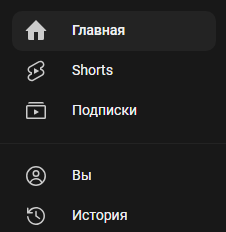

Недавно столкнулся с такой проблемой, при использовании Youtube в браузере на компьютере при включённом Zapret стали долго грузиться отдельные элементы интерфейса Youtube. Раньше такого не было. Сейчас стало дольше грузиться основное лого Youtube в левом верхнем углу которое. Так-же долго грузится иконка лайка под комментариями, не смотря на то, что лайк под видео грузится нормально.
Так-же стали долго грузиться иконки интерфейса боковой панели. Ну вот эти

Сами надписи грузятся нормально, а загрузку именно иконок приходится ждать секунд 30.
С чем это может быть связано и как это исправить? Может какие-то домены новые нужно добавить в обход? Но какие? 
Ни у кого нет такой-же проблемы?
Подберите другую стратегию на обход по домену youtube.com
В стратегиях не эксперт, какая может помочь? Пользуюсь стандартной стратегией, которая уже была у меня в сборке приложена в виде .bat файла.
Ну а я почём знаю, у нас наверняка разные провайдеры и разная география, разные стратегии будут иметь разный эффект. Запустите блокчек или GoodCheck по этому домену и пробуйте успешные стратегии по очереди.
Я лично перестал обращать внимание на такие моменты. Один день потупит, на другой перестанет. Каждый раз подрываться того не стоит.
Спасибо, попробую запустить.